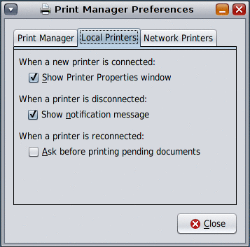
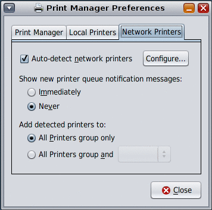

System Administration Guide: Solaris Printing
|
|||
|
1. Introduction to Printing in the Solaris Operating System 2. Planning for Printing in the Solaris Operating System (Tasks) 3. Setting Up Printing Services (Tasks) 4. Setting Up Printers (Tasks) 5. Administering Printers by Using Solaris Print Manager and LP Print Commands (Tasks) 6. Administering Printers That Use Network Printing Protocols (Tasks) 7. Customizing Printing Services and Printers (Tasks) 8. Administering Character Sets, Filters, Forms, and Fonts (Tasks) 9. Administering Printers by Using the PPD File Management Utility (Tasks) 10. Setting Up and Administering Printers From the Desktop (Tasks) Introduction to the OpenSolaris Print Manager Managing Network Device Discovery Services (Task Map) Managing Printers and Printer Queues (Task Map) Getting Started With the OpenSolaris Print Manager Setting Up Printers by Using the OpenSolaris Print Manager Managing Printer Groups and Print Jobs (Task Map) Managing Print Manager and Printer Preferences (Task Map) 11. Printing in the Solaris Operating System (Reference) 12. Troubleshooting Printing Problems (Tasks) |
Managing Print Manager and Printer PreferencesYou can view or edit Print Manager preferences in one of the following ways:
The Print Manager Preferences dialog is displayed, allowing you set preferences for Print Manager behavior, as well as settings for local and remote printer queues.  The Print Manager Preferences dialog contains the following three tabs:
Setting Print Manager PreferencesThe Print Manager tab controls the behavior of the Print Manager application.
Setting Preferences for Local USB Printer DiscoveryThe Local Printers tab controls the behavior of local printers. You can change the following preferences: When a new printer is connected:
When a printer is disconnected:
When a printer is reconnected:
Settings Preferences for Network‐Attached Printer DiscoveryThe Network Printers tab of the Print Preferences dialog controls the Print Manager application's behavior when a network‐attached printer is auto‐discovered and preconfigured. You can change the following settings:
Configuring Auto-Discovery Settings for Network‐Attached PrintersThis sub-dialog contains settings that control the type of network printers that are discovered and the parameters for doing so. By default, the Simple Network Management Protocol (SNMP) service is available. You might need to enable this service, depending on the Solaris release you are running. Any other available print services will be listed here. Note - In the OpenSolaris 2008.11 release, attempts to enable the HAL add‐on module from the desktop or by using SMF commands, cause the system to revert to maintenance state. This problem does not occur if you are running a supported Solaris Express Community Edition release. To enable this service in the OpenSolaris 2008.11 release, you must first install the SUNWSmmgr package. Detailed instructions can be found at http://www.opensolaris.org/os/project/indiana/resources/relnotes/200811/x86/. The controls on the right-hand side of the configuration sub-dialog are dictated according to the service that is selected in the list. Some services may have advanced controls in the form of an expander section. The expander is collapsed by default. The ability to edit some of these controls requires certain Role-Based Access Control (RBAC) privileges. If you are not logged in with the appropriate RBAC privileges, the controls are visible, but they are read-only. To find out what you or your system administrator need to do to allow the editing of these controls, click the Details button. For instructions, see How to Enable the Network Device Discovery Service. |
||
|